พระราชกรณียกิจ
ด้านอนุรักษ์วัฒนธรรมและศิลปะ
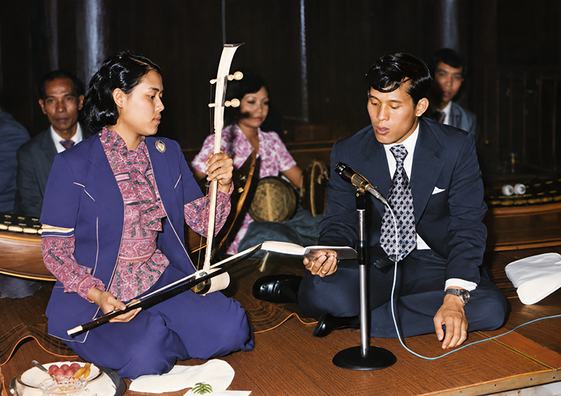
“ศิลปะทุกด้าน ทุกแขนง ของทุกชาติ ต่างก็อำนวยประโยชน์ในการสร้างสรรค์ความสุข ความมั่นคง และความสัมพันธ์ ทั้งในระดับบุคคล ระดับสังคม ระดับประเทศ ไปจนถึงระดับโลกด้วยกันทั้งสิ้น...”
พระราโชวาท สมเด็จพระกนิษฐาธิราชเจ้า กรมสมเด็จพระเทพรัตนราชสุดา ฯ สยามบรมราชกุมารี
ในพิธีพระราชทานปริญญาบัตรแก่ผู้สำเร็จการศึกษาสถาบันบัณฑิตพัฒนศิลป์ ประจำปีการศึกษา ๒๕๖๐
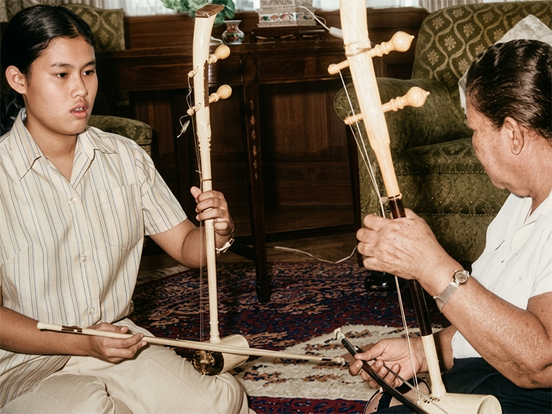
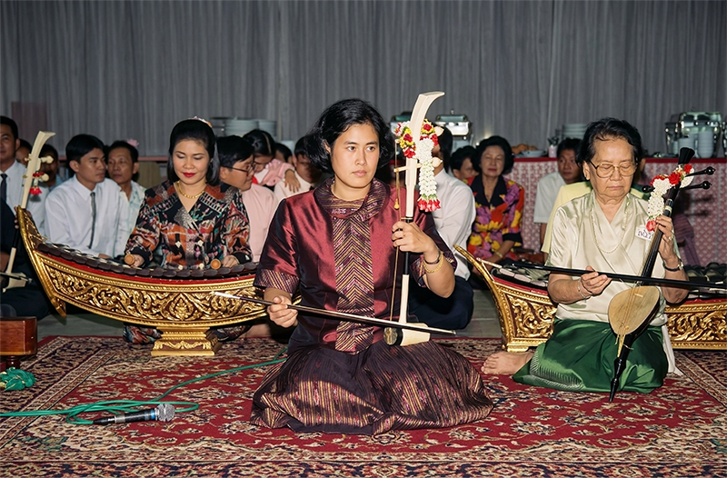
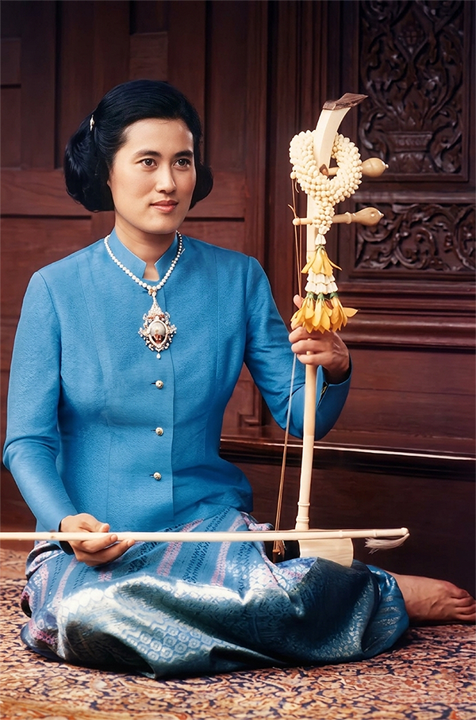
ทรงเป็นเอกอัครราชูปถัมภกมรดกวัฒนธรรมไทย (พ.ศ.๒๕๓๑) และ วิศิษฏศิลปิน (พ.ศ.๒๕๔๖) ด้วยมีพระราชจริยวัตรทางดนตรี สืบเนื่องตั้งแต่ครั้งทรงพระเยาว์ที่ได้ทรงเริ่มศึกษาดนตรีไทย “ซอด้วง” เมื่อพระชนมายุ ๑๔ พรรษา ขณะกำลังศึกษา ชั้นมัธยมศึกษาปีที่ ๒ โรงเรียนจิตรลดา ทรงพระราชนิพนธ์ และทรงร้องเพลงไทยเดิมหลายเพลง นอกจากโปรดการดนตรีไทยแล้ว ยังมีพระราชดำริส่งเสริมการใช้ภาษาไทย และวรรณกรรมไทย การอนุรักษ์และพัฒนาศิลปวัฒนธรรมไทยทั้งการช่างไทย นาฏศิลป์ไทย งานพิพิธภัณฑ์ ประวัติศาสตร์ และโบราณสถาน
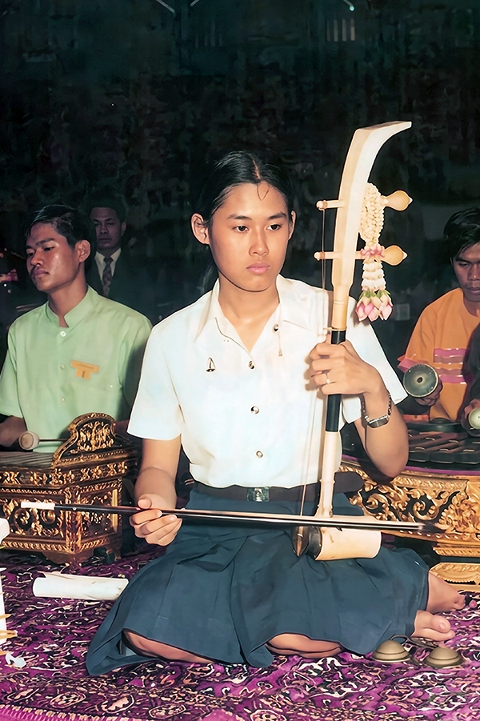
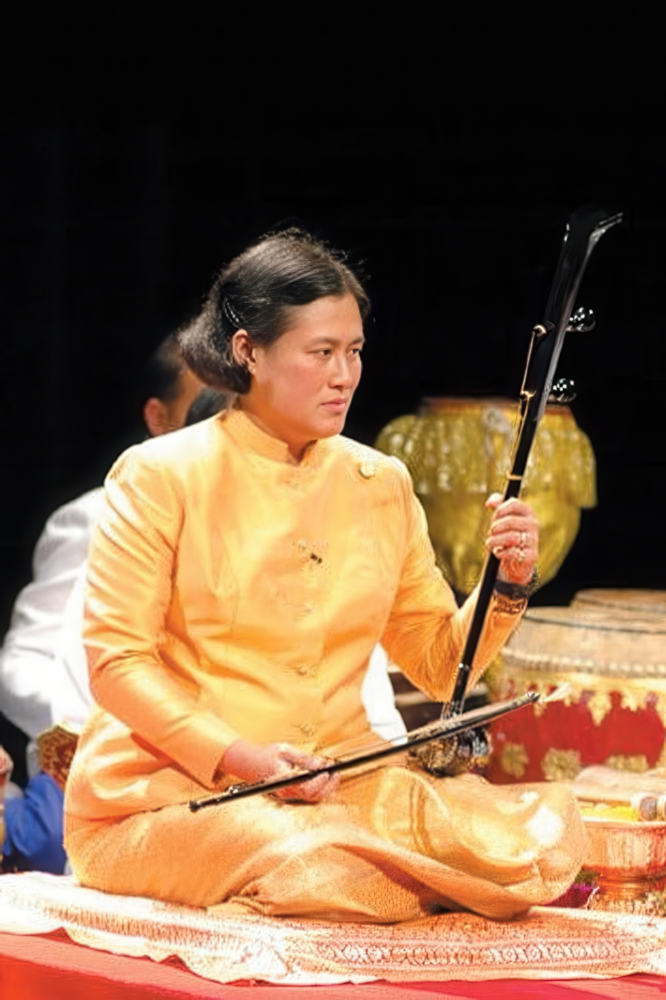
พ.ศ. ๒๕๑๖ ขณะทรงศึกษาระดับอุดมศึกษาที่คณะอักษรศาสตร์ จุฬาลงกรณ์มหาวิทยาลัย ทรงเข้าร่วมเป็นสมาชิกในชมรมดนตรีไทย สจม. ทรงศึกษารายละเอียดในดนตรีไทยทั้งทางทฤษฎีและปฏิบัติ ชำระตรวจทานโน้ตเพลง บันทึกและเผยแพร่บทความพระราชนิพนธ์ด้านดนตรีไทย พระราชทานข้อวินิจฉัย แนะนำ โดยทรงปฏิบัติ เป็นแบบอย่าง และบ่อยครั้งที่ทรงดนตรีไทยร่วมกับนักดนตรี มีพระราชดำริให้สนับสนุนการอนุรักษ์เครื่องดนตรีไทยโบราณ ใช้เครื่องดนตรีไทยในโรงเรียนเพื่อการเรียนดนตรีของเยาวชน ทำให้ไม่ต้องใช้เครื่องดนตรีต่างประเทศซึ่งมีค่าใช้จ่ายที่สูง และยังเป็นการส่งเสริมช่างทำเครื่องดนตรีไทยให้มีที่จำหน่ายผลงาน
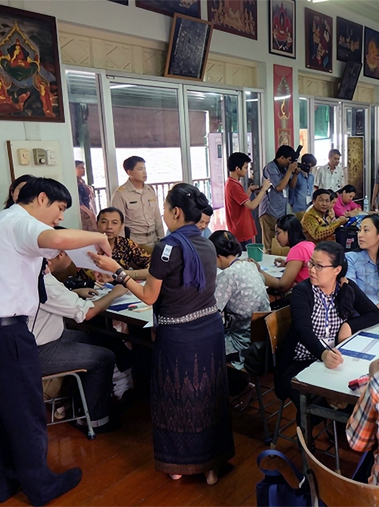
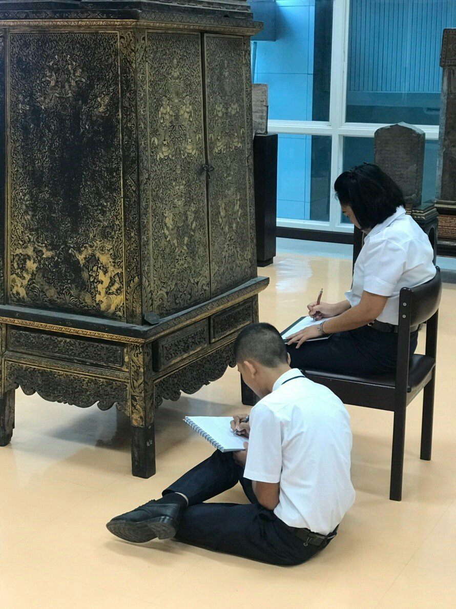
พ.ศ. ๒๕๒๕ ในวาระสมโภชกรุงรัตนโกสินทร์ ๒๐๐ ปี ทรงรับเป็นองค์ประธานกรรมการอำนวยการบูรณปฏิสังขรณ์ พระบรมมหาราชวัง และวัดพระศรีรัตนศาสดาราม อันประกอบด้วย พระมหาปราสาทราชมณเฑียร ตลอดจนเครื่องราชูปโภคต่าง ๆ ซึ่งล้วนต้องใช้ฝีมือช่างสิบหมู่ในการดำเนินการ แต่กลับขาดแคลนช่าง จึงมีพระราชดำริให้ ถ่ายทอดวิชาช่างสิบหมู่ให้แก่คนรุ่นใหม่ จัดฝึกอบรมงานช่างฝีมือต่าง ๆ ให้สามารถเป็นกำลังในงานอนุรักษ์ศิลปะโบราณวัตถุได้โดยไม่เก็บค่าเล่าเรียน จึงมีการจัดตั้งโรงเรียนผู้ใหญ่พระตำหนักสวนกุหลาบ วิทยาลัยในวัง(ชาย) ขึ้นใน พ.ศ. ๒๕๓๒ ซึ่งต่อมาได้รับพระราชทานนามใหม่คือ “โรงเรียนช่างฝีมือในวัง(ชาย)”
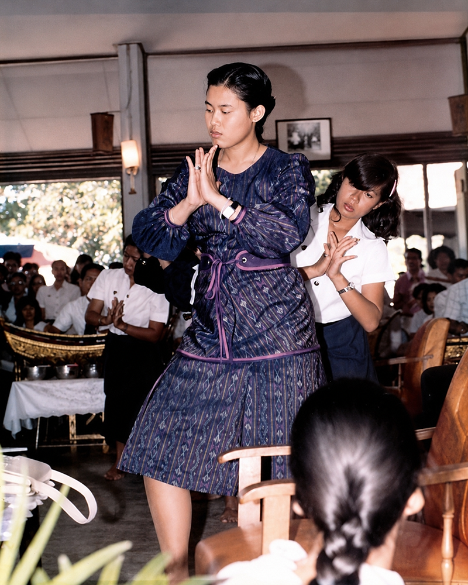
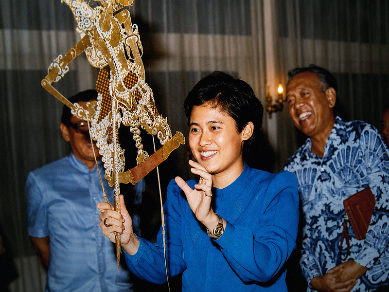
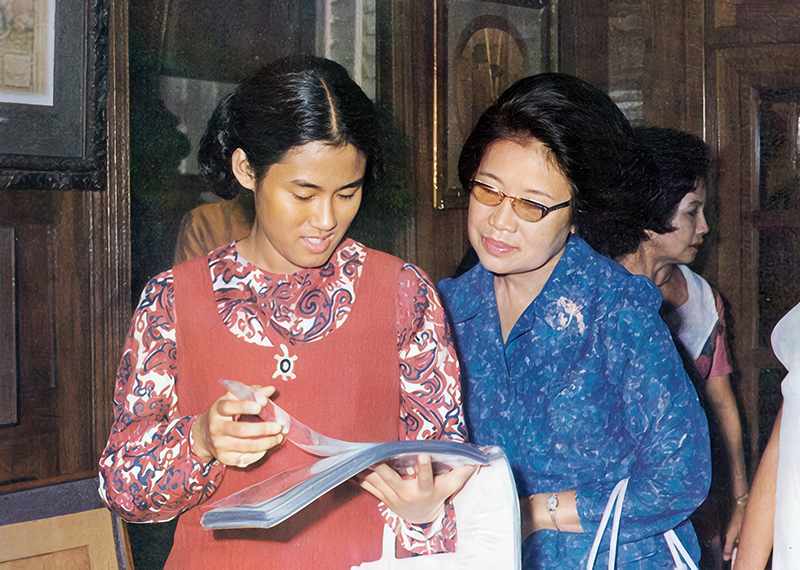
พ.ศ. ๒๕๒๘ รัฐบาลได้ประกาศให้วันที่ ๒ เมษายน ของทุกปี ซึ่งเป็นวันคล้ายวันพระราชสมภพของสมเด็จพระกนิษฐาธิราชเจ้า กรมสมเด็จพระเทพรัตนราชสุดา สยามบรมราชกุมารี เป็น “วันอนุรักษ์มรดกไทย” ด้วยตระหนักในพระปรีชาสามารถ และพระมหากรุณาที่ทรงสนับสนุนกิจกรรมในด้านศิลปวัฒนธรรมของประเทศชาติเสมอมา
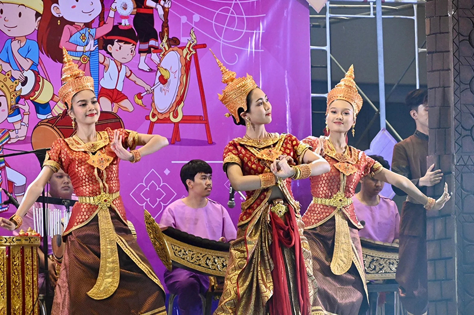
พ.ศ. ๒๕๔๘ มีพระราชดำริให้ส่งเสริมการเผยแพร่วัฒนธรรมไทยด้วย “โครงการฟื้นฟูศิลปะการแสดงพื้นบ้าน ตามพระราชดำริฯ” โดยหน่วยงานที่เกี่ยวข้อง เช่น กรมศิลปากร กระทรวงวัฒนธรรม หน่วยงานการศึกษา และชุมชนท้องถิ่นต่าง ๆ ร่วมกันสนับสนุนและส่งเสริมการอนุรักษ์ศิลปะการแสดงพื้นบ้าน สำรวจและเก็บข้อมูลทางประวัติศาสตร์ รูปแบบการแสดงและความสำคัญต่อชุมชน จากนั้นจึงถ่ายทอดความรู้โดยสนับสนุนเครื่องดนตรีและอุปกรณ์รวมถึงสถานที่และโอกาสในการแสดง ช่วยให้ศิลปะการแสดงพื้นบ้านทั้ง ๔ ภาค ได้กลับมาเป็นที่รู้จัก ไม่สูญหายไป เช่น การแสดงซอพื้นบ้านของภาคเหนือ การแสดงหมอลำและโปงลาง ภาคอีสาน ภาคใต้ เช่น โนรา และ หนังตะลุง และภาคกลาง เช่น ลิเก เพลงพื้นบ้าน และยังส่งเสริมให้มีการเผยแพร่โดยประยุกต์ใช้สื่อดิจิทัลและการแสดงออนไลน์เพื่อเข้าถึงกลุ่มคนรุ่นใหม่ได้อย่างกว้างขวาง ทำให้เกิดการรักษาและสืบสานมรดกทางวัฒนธรรมอันทรงคุณค่า